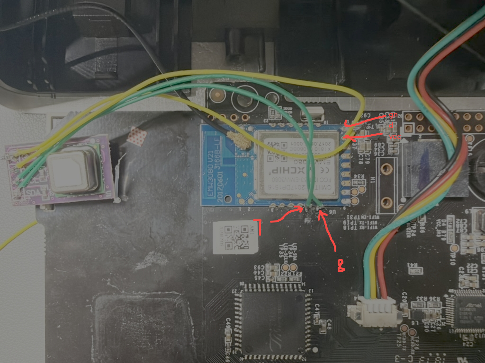

M1 空气检测仪 功能与操作
M1 固件提供 PM2.5、甲醛、温湿度读数，屏幕亮度设置，并可作为 A1 空气净化器的联动数据源。本文介绍安装完成后的日常操作；首次安装见 M1 刷机。
首页读数
首页展示实时空气质量信息：
| 读数 | 说明 |
|---|---|
| PM2.5 | 颗粒物浓度 |
| 甲醛 | 甲醛浓度 |
| 温度 | 环境温度 |
| 湿度 | 相对湿度 |
界面按读数等级给出颜色与文字判定（优 / 良 / 差等）。
外接 SCD40 二氧化碳传感器（实验性）
支持 SCD40 的测试固件可通过 I²C 读取 CO₂，识别到传感器后网页首页自动显示 CO₂ 数值（ppm）。新打开页面时，仅收到有效读数才显示卡片；若传感器读数已过期则隐藏。当前页面已取得有效读数后再过期，保留本次页面会话最后一次有效值，改为灰色并标注“已过期”。尚无有效读数时显示“—”；刷新页面会清除缓存。原有温湿度读数仍来自 M1 自带传感器。
目前实机已读到有效数据，但连续采样曾停止，稳定性验证尚未通过。本功能仍在测试中，不代表正式发布版本已支持。
断电后接线，并根据实板确认焊点。以下 GPIO 是 SDK 信号名，不是排针序号：

照片中的手写 7 / 8 是 GPIO7 / GPIO8 信号名，对应下表 SCL / SDA，不是模组物理引脚编号。GND、VCC 箭头用于定位供电焊点，接线前仍需按实板确认电压和极性。
| M1 信号 | SCD40 模组 |
|---|---|
| GPIO8（I²C1 SDA） | SDA |
| GPIO7（I²C1 SCL） | SCL |
| 稳定电源（按模组额定电压） | VCC / VIN |
| GND | GND |
SDA、SCL 分别上拉到 3.3 V，短线可从 4.7 kΩ 开始；模组已有接到 3.3 V 的 10 kΩ 上拉时可先使用现有上拉。确认上拉接向，不要将 M1 总线拉到 5 V。使用短线，电源须能承受测量峰值电流，不能由 GPIO 供电。GPIO9 / GPIO10 用于原机 UART，不要占用。
屏幕亮度
屏幕亮度可在网页中调整，设置会保存到设备并进行回执确认。也可以通过 MQTT 命令调整亮度，独立 MQTT 客户端修改后设备会回传设置值。
Wi-Fi 图标与错误图标
M1 使用原面板上的两个图标提示网络状态，它们是独立输出：
| 状态 | Wi-Fi 图标 | 错误图标 |
|---|---|---|
| 正常 | 常亮 | 灭 |
| Wi-Fi 故障 | 闪烁 | 闪烁 |
| 已配置 MQTT 连接异常 | 常亮 | 两长两短 |
关闭输出时对应 GPIO 切换为低电平。未配置 MQTT 不报 MQTT 故障。
M1 原屏幕的甲醛 / PM2.5 彩色指示灯的阈值和手动颜色控制尚无已验证协议，当前不支持。
按键与恢复
M1 使用原面板的 0x18 长按事件，发送固定 0x16 ACK，单次启动去重后清除 Wi-Fi 和网页密码。
M1 不支持像 TC1 / A1 那样精确的 5 / 10 秒分段恢复手势，也没有自定义按键映射——不要套用 A1/TC1 的按键设置。硬件恢复的详细步骤见 M1 刷机。
完整重置可以在 M1 的 WebUI 中执行。
作为 A1 的联动数据源
M1 只检测、上报并应答已授权的 A1，不主动控制净化器，也不主动轮询 A1。
只需在 A1 添加本机 MAC 和可选 IP。MQTT 用于建立会话，传感器查询走局域网 UDP。M1 页面只读显示会话状态，最多同时保留四台 A1；无需维护许可列表或配对码。
绑定与联动规则见 MQTT 与联动。
IotCloud 与 Home Assistant
IotCloud 的 M1 详情页支持同样的 CO₂ 卡片，设备列表显示有效 CO₂ 摘要。识别并取得 SCD40 有效读数后，Home Assistant 通过 MQTT 自动发现“二氧化碳”实体（ppm）；超过 20 秒未更新时，该实体变为不可用，不影响 M1 原有传感器实体。
MQTT
M1 固定使用 TMCP（v2） 主题，不提供 Legacy 模式选择。Home Assistant 接入与平台配置见 MQTT 与联动。